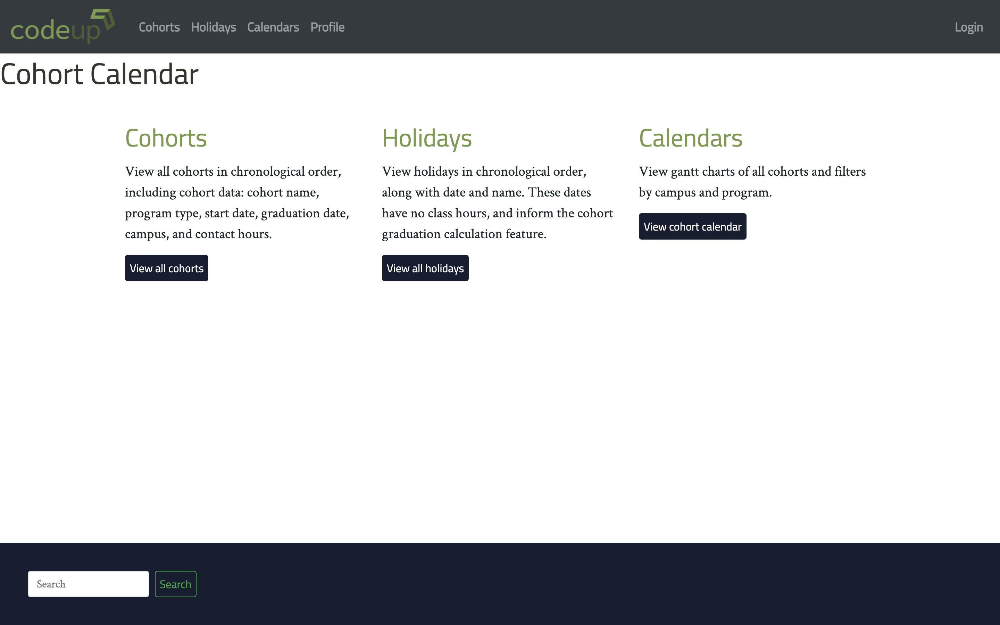
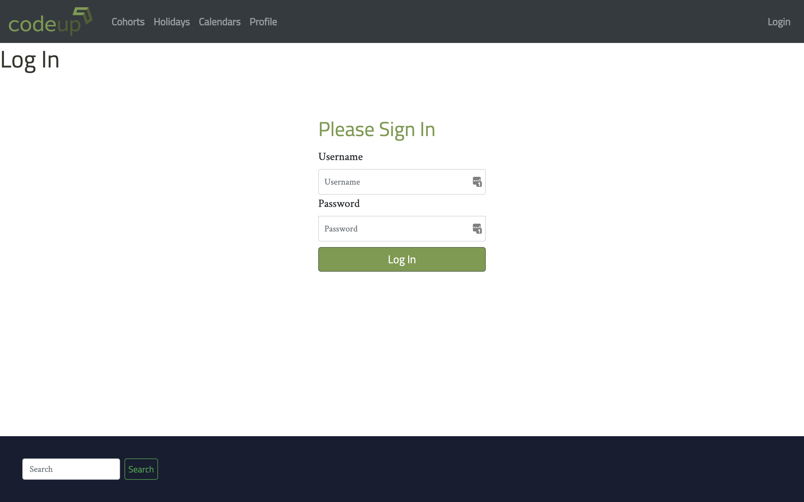
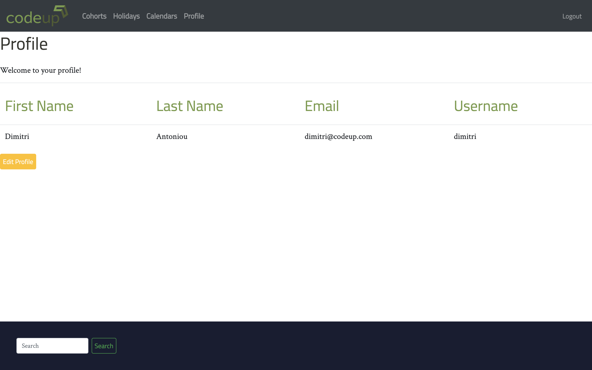
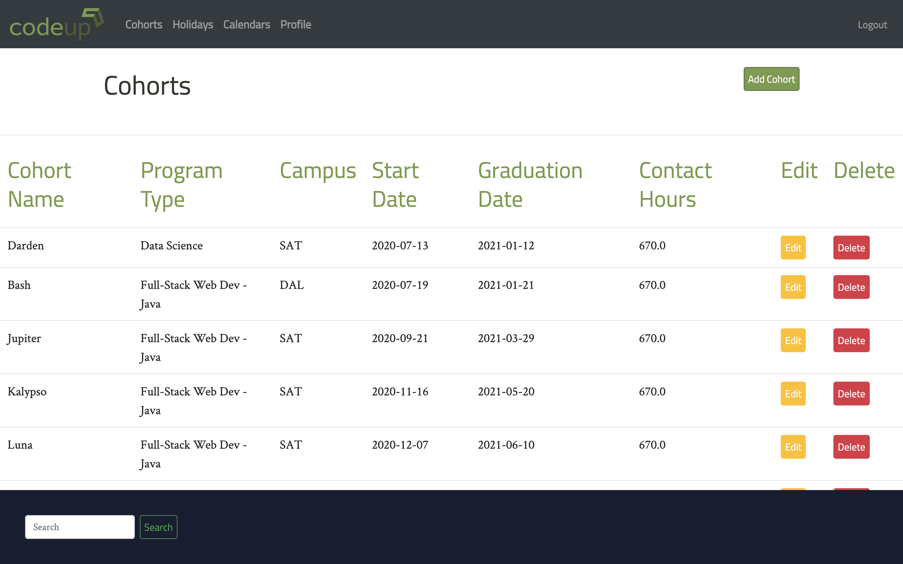

The Codeup Calendar is a full-stack web application built with bootstrap, custom CSS, vanilla JavaScript, Java, SpringBoot, and MySQL. This home page shows the primary views of cohorts, holidays, and calendars.
It is styled with bootstrap and custom CSS to match Codeup's brand standards.
1 / 6

The Login view uses Spring Security for user authentication and to redirect visitors.
2 / 6

After logging in, the profile page uses thymeleaf to populate a custom table with user data from a MySQL database.
Users can leverage CRUD functionality to update their information. A User controller hashes passwords to protect privacy.
3 / 6

The Cohorts view uses thymeleaf to populate class data from a MySQL database.
Custom Java code in the Cohort controller automatically calculates a graduation date based on a start date, total hours, and holiday schedule by looping through an array of dates and building a schedule with daily hours values.
4 / 6

A Google Charts API renders the cohorts data as a user-friendly gantt chart visualization.
Cohorts are color-coded by their program property.
5 / 6

Filtering by program or city changes the url and triggers a custom ajax request that returns Cohort data in JSON format,
which is then passed into the Charts API. Vanilla JavaScript color codes the filter buttons to match the current view.
6 / 6